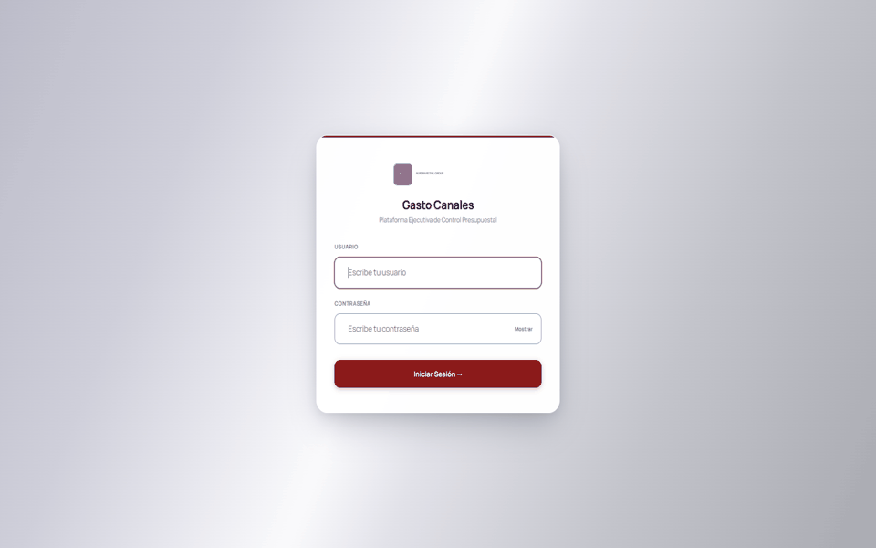
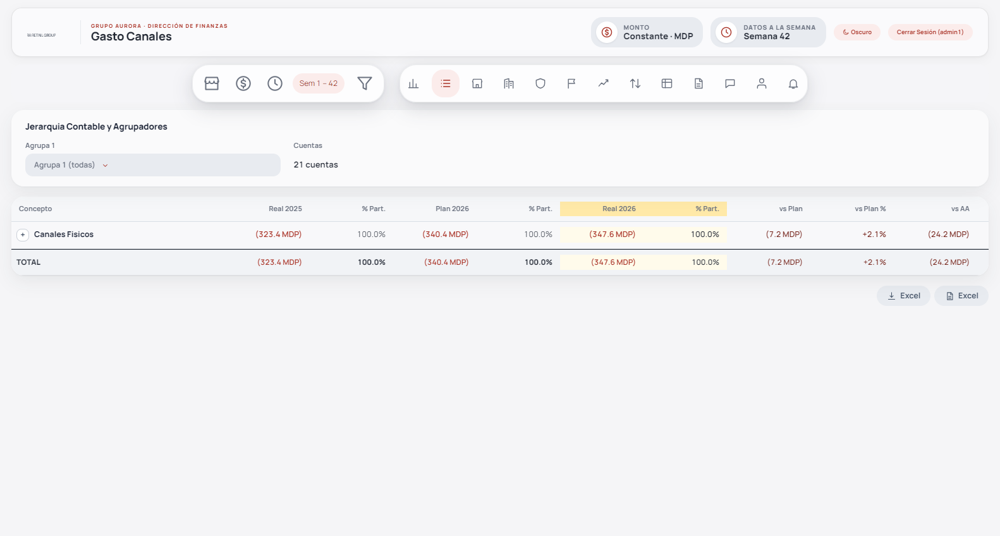
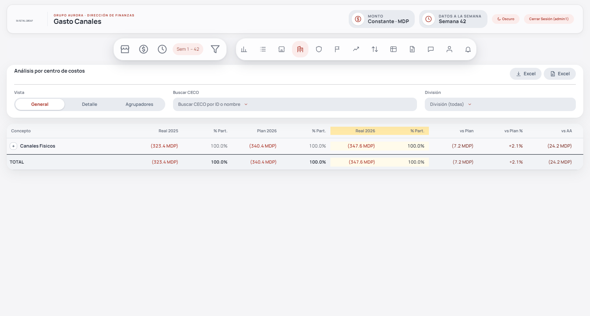
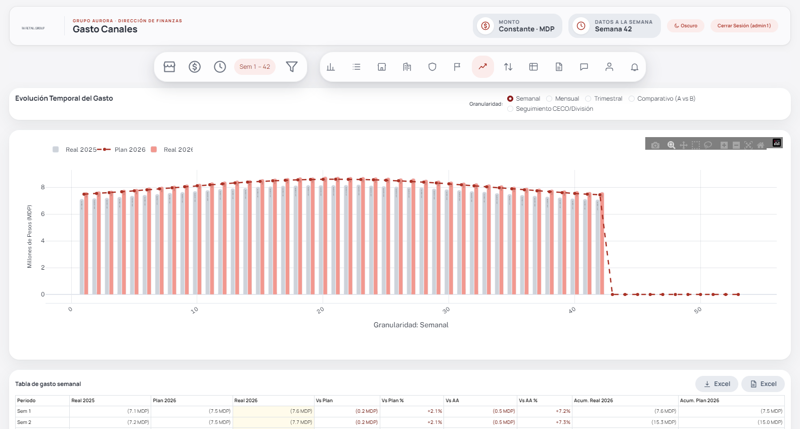
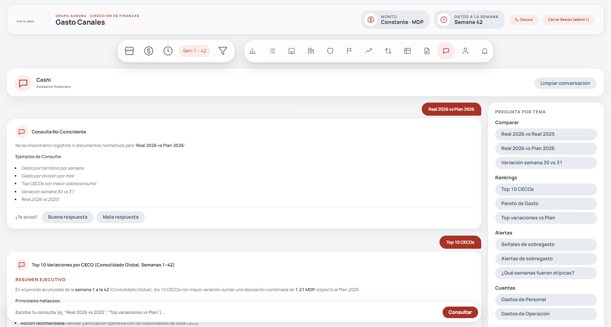
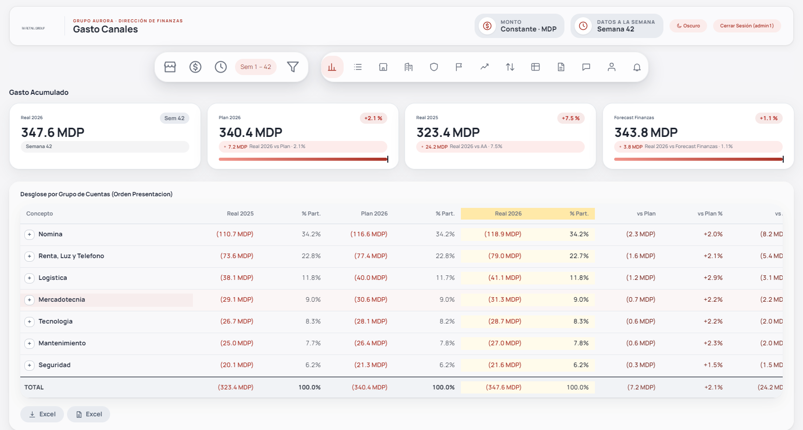

Weekly Spend Control Dashboard
The sanitized source of a production-style dashboard, running its real pipeline and real app on synthetic data: weekly actual, plan and forecast, drill-down trees, exports, roles and the Cashi assistant. Recorded with headless Chrome.

Screens





Run it
See dash-app/README.md: generate the synthetic inputs, run the build, start the app. Source: dash-app/.